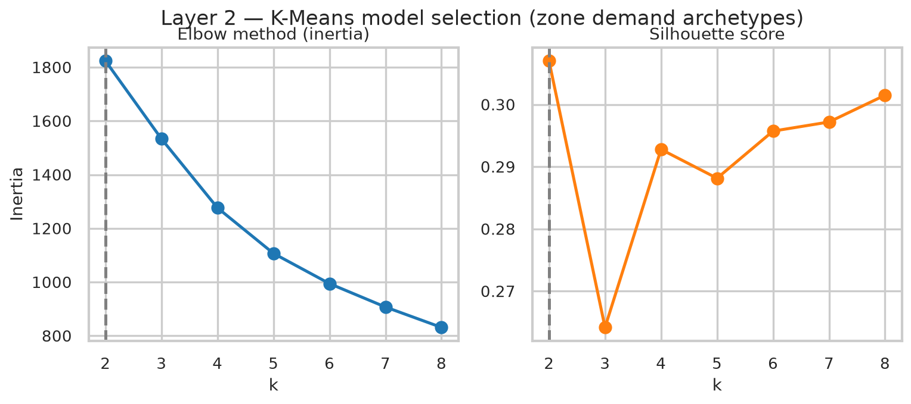
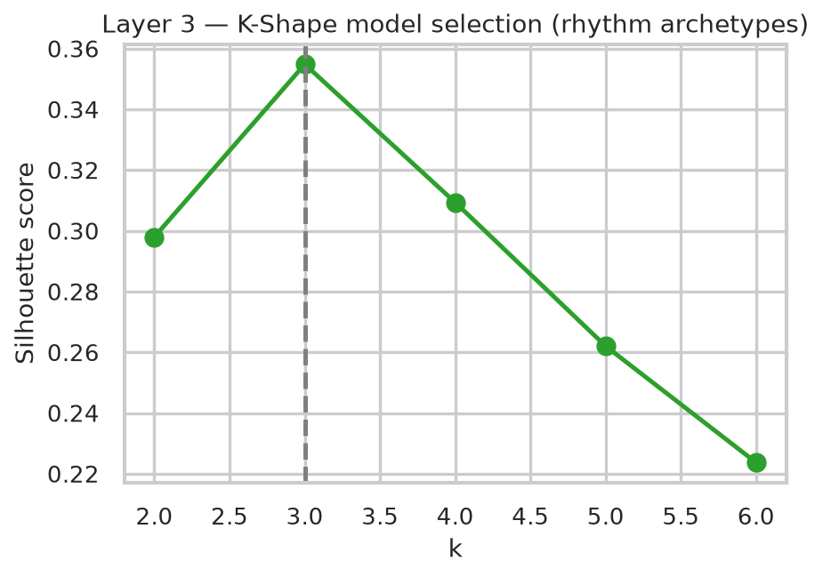
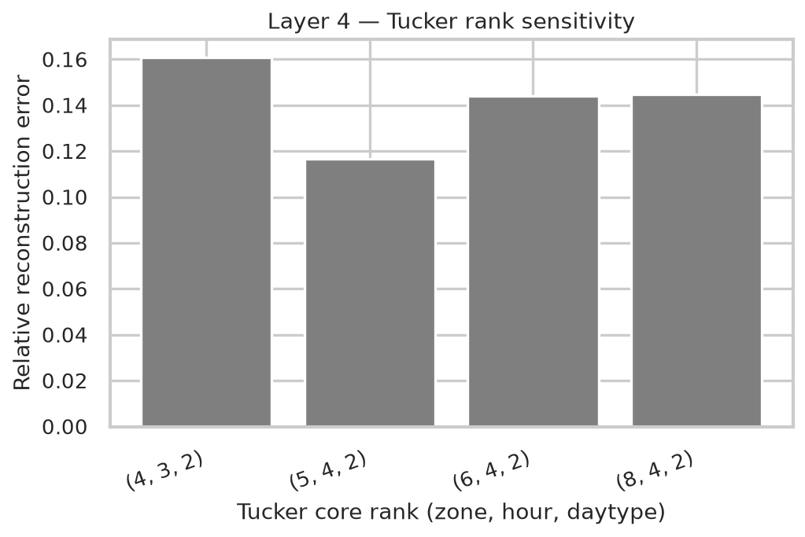
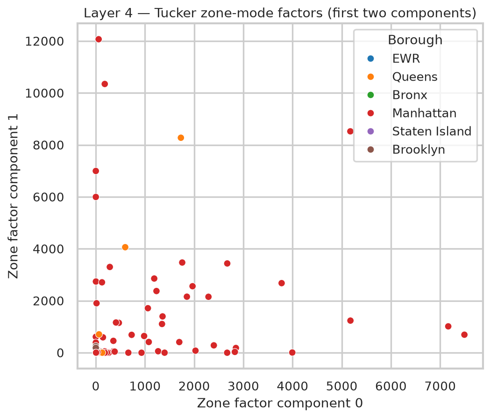
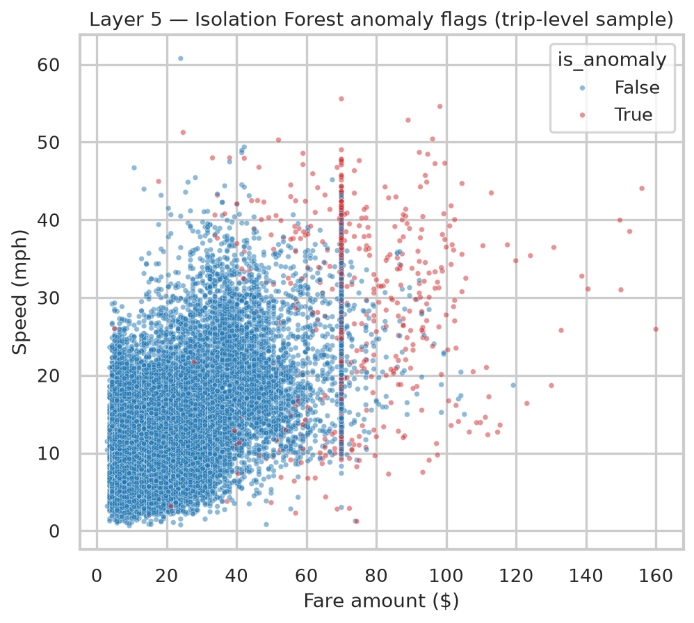
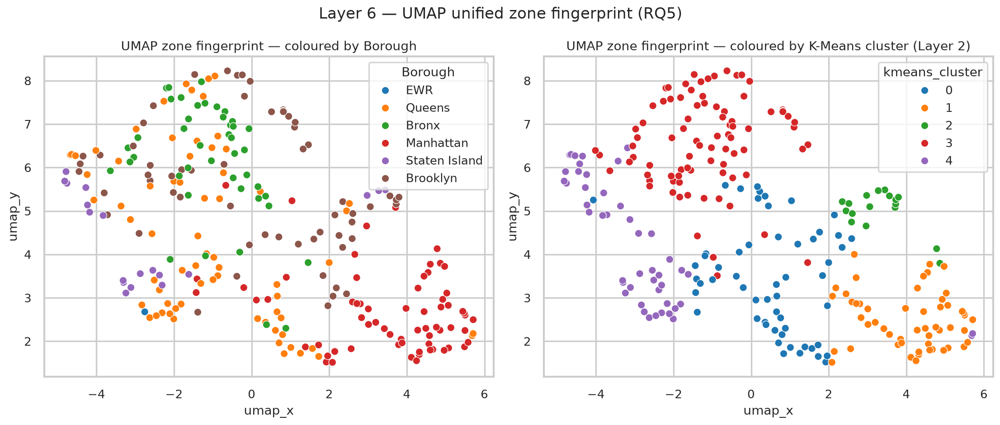

Appendix
Figure & Table Reference
A supporting reference for every figure and table in the dissertation, broken down into what it is, why it's included, its axes/columns and legend/colours, and how to read it.
Figure · Layer 2
K-Means model selection (elbow + silhouette)

What
Two side-by-side line charts, both against candidate cluster count k = 2..8. Left: inertia (elbow method). Right: silhouette score.
Why
Shows the k selection wasn't arbitrary: both standard internal validation metrics were computed across a full range before choosing k = 5.
Axes
X: k (number of clusters), both panels. Left Y: inertia (within-cluster sum of squares; lower is tighter clusters). Right Y: silhouette score (−1 to 1; higher is better separated).
Legend/Colours
No categories: single blue line (inertia), single orange line (silhouette). The dashed grey vertical line marks k = 2, the statistical optimum by silhouette.
How to read it
"The elbow curve has no sharp bend; it decays smoothly, so it doesn't cleanly pick a k on its own. The silhouette curve peaks at k = 2 (0.307) then dips at k = 3 before climbing back up: that's the flat, noisy curve mentioned above. k = 5 scores 0.288, only 0.019 below the peak, but is far more interpretable. I reported both, not just the one I used."
Figure · Layer 2
Zone-level cluster portraits (violins)

What
Five violin plots (one per feature), each showing the distribution of that feature across the zones inside each of the 5 clusters.
Why
The summary table only shows the mean per archetype: this shows the full spread, proving each cluster is a real, coherent distribution rather than five arbitrary centroids.
Axes
X (all panels): cluster ID, 0–4. Y: log10(trip_count), mean_fare ($), mean_distance (mi), pct_night (0–1), pct_cash (0–1); one per panel.
Legend/Colours
Colour = cluster ID (matplotlib default order): 0 blue = Mixed-access, 1 orange = Manhattan core, 2 green = Nightlife, 3 red = Outer-borough residential, 4 purple = Airport/hub. The black bar + white dot inside each violin is the median and interquartile range.
How to read it
"Cluster 1 (Manhattan core) is highest and tightest on volume, lowest on fare/distance. Cluster 4 (airport) is highest on fare/distance. Cluster 2 (nightlife) stands alone on % night trips. If asked why cluster 4's volume violin is so wide: that's JFK/LaGuardia themselves (a couple of mega-hub zones) sitting alongside many smaller connector zones that share the airport's fare/distance signature but not its volume. K-Means clusters on standardised behavioural features, not raw size, so that's expected, not a flaw."
Table 2 · Layer 2
K-Means zone archetypes at k = 5
What
One row per archetype: zone count, total trips, mean fare/distance, % night, % cash, and 2–3 example zones.
Why
Turns five abstract cluster IDs into five named, defensible archetypes with the numbers to back each label.
Columns
Archetype · Zones (count) · Total trips (6mo) · Mean fare · Mean distance · % night · % cash · Example zones.
How to read it
"Read down the 'zones' column first: 53 + 85 = 138 of 260 zones sit at the two extremes (dense core vs. near-empty periphery). That imbalance, not any single archetype, is the headline equity finding."
Figure · Layer 3
K-Shape model selection

What
A single line chart: silhouette score against candidate k = 2..6 for the temporal rhythm clustering.
Why
Unlike Layer 2, this curve has a clean, unambiguous peak: a much easier validation story to tell.
Axes
X: k. Y: silhouette score.
Legend/Colours
Single green line. Dashed grey vertical line marks the selected k = 3 (silhouette 0.355).
How to read it
"This one's simple: k = 3 is both the statistical optimum and the interpretable choice, so there's no trade-off to defend here, unlike Layer 2."
Figure · Layer 3
K-Shape rhythm centroids

What
Three lines, each the average 24-hour demand shape (not volume) for one rhythm cluster.
Why
Visualises what "rhythm archetype" actually means: a repeating daily pattern, independent of how big the zone is.
Axes
X: hour of day (0–23). Y: z-normalised demand shape (unitless; 0 is that zone-group's own daily average, not zero trips).
Legend/Colours
Blue = Rhythm 0 (evening/business), orange = Rhythm 1 (nightlife, peaks at hour 0), green = Rhythm 2 (morning-commuter, peaks at hour 8).
How to read it
"The Y-axis isn't trip count; it's shape after two rounds of normalisation, so a huge Midtown zone and a tiny residential zone can land on the same line if their hourly pattern matches. That's deliberate: RQ2 is about rhythm, not scale."
Table 3 · Layer 3
K-Shape rhythm archetypes
What
One row per rhythm archetype: zone count, mean trips/zone, peak hour, trough hour, borough mix.
Why
Shows each rhythm cluster mixes multiple boroughs, supporting the claim that function, not geography, drives rhythm.
Columns
Rhythm archetype · Zones · Mean trips/zone · Peak hour · Trough hour · Borough mix (counts).
How to read it
"Look at the borough-mix column, not the label: Rhythm 2 (morning-commuter) is almost evenly Brooklyn/Queens/Manhattan. That cross-borough mixing is the actual evidence for the RQ2 claim, not the peak-hour number alone."
Figure · Layer 4
Tucker rank sensitivity

What
A bar chart of relative reconstruction error for four candidate Tucker core ranks.
Why
Justifies the chosen rank (6,4,2) by showing it wasn't picked in isolation; nearby ranks were tested too.
Axes
X: candidate rank as (zone, hour, day-type): (4,3,2), (5,4,2), (6,4,2), (8,4,2). Y: relative reconstruction error (lower = better fit).
Legend/Colours
No categories: uniform grey bars; the comparison is between bars, not colour-coded groups.
How to read it
"Notice (5,4,2) is actually lower than the chosen (6,4,2): 0.117 vs 0.134. That rank was kept anyway, stated directly: this is non-convex multiplicative-update optimisation, so nearby ranks can land in different local minima; it's not evidence against the choice, and (6,4,2) gives finer zone-mode resolution, which is what I wanted going in."
Figure · Layer 4
Tucker hour-mode component loadings

What
Four lines, one per hour-mode Tucker component, each showing how strongly that component "activates" across the 24-hour day.
Why
These four components are one of the three factor axes recovered by the tensor decomposition; this figure is the direct evidence for what each one means.
Axes
X: hour of day (0–23). Y: component loading (unitless, non-negative by construction).
Legend/Colours
Blue = component 0 (evening rush, peak 18:00), orange = component 1 (morning rush, peak 08:00), green = component 2 (late-night, peak 23:00), red = component 3 (midday, peak 15:00).
How to read it
"These are hour-mode components only: a separate factorisation from the six zone-mode components on the next figure. They're not paired 1:1 by index; the core tensor is what mixes them together, not shared component numbers."
Figure · Layer 4
Tucker zone-mode factors (first two components)

What
A scatter of all 260 zones on just 2 of the 6 zone-mode components, coloured by borough.
Why
Shows the zone-mode factorisation recovers recognisable, high-loading Manhattan/Queens hub zones on these two axes specifically.
Axes
X: zone factor component 0. Y: zone factor component 1. Both are Tucker loadings (non-negative, unitless).
Legend/Colours
Colour = borough: EWR, Queens, Bronx, Manhattan, Staten Island, Brooklyn. (EWR = Newark Liberty Airport's TLC zone.)
How to read it
"If asked why only Manhattan (red) and a couple of Queens (orange) points stand out while Bronx/Brooklyn/Staten Island cluster at the origin: this plot is only 2 of the 6 zone-mode dimensions. Those boroughs load more heavily on the other four components, not shown here; this is a projection, not the full picture."
Table 4 · Layer 4
Interpretation of Tucker hour-mode components
What
A 2-column lookup: component index → plain-English interpretation (peak hour).
Why
Turns four abstract loading curves into four named temporal patterns, referenced throughout the results section.
Columns
Component (0–3) · Interpretation (peak hour).
How to read it
"This table is just the caption for the hour-factors figure: component numbers here match that figure's legend, not the separate zone-mode components."
Figure · Layer 5
Fare vs. speed, coloured by anomaly flag

What
A scatter of a 40,000-trip visualisation subsample (not the full 500K), fare vs. speed, coloured by whether Isolation Forest flagged the trip anomalous.
Why
Makes the "long, fast, expensive" anomaly profile visible directly, rather than just asserted via medians.
Axes
X: fare amount ($). Y: speed (mph).
Legend/Colours
Blue = is_anomaly False, red/pink = is_anomaly True.
How to read it
"Notice the dense vertical red-and-blue stripe at exactly $70: that's not noise, that's the flat-rate JFK-Manhattan fare. It's a structural pricing rule, not a modelling artefact, and it's a big part of why JFK dominates the anomaly-rate ranking: every JFK↔Manhattan trip shares that exact $70 fare regardless of actual distance/speed, which reads as unusual relative to the metered-fare norm the rest of the city runs on."
Figure · Layer 5
Highest anomaly-rate zones

What
A horizontal bar chart of the zones with the highest anomaly rate, restricted to zones with ≥30 sampled trips.
Why
The ≥30 filter is the whole point: the raw (unfiltered) ranking is dominated by a small-sample artefact (a single odd trip in a near-empty zone reads as "100% anomalous"). This figure is the corrected, credible version.
Axes
X: anomaly rate (0–1). Y: zone name, sorted descending.
Legend/Colours
Colour = borough (Brooklyn, Queens, Bronx, Manhattan).
How to read it
"Canarsie tops it on a modest sample (39 trips), but JFK Airport is the more credible signal: a large sample (24,426 trips) still shows a 27% anomaly rate. The rest of the well-supported list is almost entirely outer Queens/Brooklyn, which is itself a finding: peripheral trips look 'unusual' against a norm defined by short Manhattan rides."
Table 5 · Layer 5
Anomalous vs. normal trip profile (medians)
What
Median fare, speed, and distance, normal vs. anomalous, with the ratio between them.
Why
Quantifies "long, fast, expensive" precisely, rather than leaving it qualitative.
Columns
Feature (median) · Normal · Anomalous · Ratio.
How to read it
"Distance has the largest ratio (10.4×): anomalies are defined more by how far the trip goes than by fare or speed alone."
Table 6 · Layer 5
Highest anomaly-rate zones (n ≥ 30)
What
The full 10-row table behind the zone-anomaly bar chart: zone, borough, anomaly rate, sample size, total 6-month trips.
Why
Lets a reader check sample size (n sampled) alongside rate: the two together, not the rate alone, are what make a zone's ranking credible.
Columns
Zone · Borough · Anomaly rate · n sampled · Total trips (6mo).
How to read it
"Always cite n sampled alongside the rate: Canarsie's 36% is on just 39 trips, JFK's 27% is on 24,426. Both are 'real' by the ≥30 filter, but they carry very different statistical weight."
Figure · Layer 6
UMAP fingerprint: borough vs. K-Means cluster

What
The same 2D UMAP embedding of all 260 zones, plotted twice side by side with two different colour keys.
Why
This is the single most important validation figure in the whole dissertation: two completely independent label sets (known geography vs. an unsupervised cluster assignment) explain the same shape.
Axes
X: umap_x. Y: umap_y (both are UMAP's own internal coordinates; the units are not independently meaningful, only relative position/neighbourhood is).
Legend/Colours
Left panel: colour = borough (6 categories). Right panel: colour = Layer 2 K-Means cluster (0–4, same colour convention as the violin plot).
How to read it
"Compare the two panels shape-for-shape, not point-for-point: the same visual regions that are borough-pure on the left are cluster-pure on the right. That's the proof that Layer 2's clusters aren't a modelling artefact: they land on real, contiguous regions of the manifold, coloured completely independently of the borough labels the model never saw."
Figure · Layer 6
UMAP vs. linear PCA baseline

What
Two 2D projections of the exact same 17-dimensional zone fingerprint: UMAP (left) vs. linear PCA (right).
Why
Quantifies why a non-linear method was needed instead of just running PCA and calling it a day.
Axes
Left: umap_x / umap_y (non-linear, local-structure-preserving coordinates). Right: pca_x / pca_y (the first two principal components, in original-feature-variance units).
Legend/Colours
Colour = borough, both panels; same 6-category key as the previous figure.
How to read it
"PCA explains only 48.8% of variance in 2D and the boroughs visibly overlap more on the right. That's the quantitative justification for UMAP: the fingerprint's real structure is non-linear, so a linear method loses separation that UMAP recovers."
Table 1 · Section 3
Big Data 5 Vs assessment
What
A 5-row table rating the dataset against Laney's (2001) Volume/Velocity/Variety/Veracity/Value framework, each with a star rating and one line of supporting evidence.
Why
Establishes, before any modelling, that this is a genuine Big Data problem, not just "a large CSV."
Columns
Dimension · Assessment (stars) · Evidence.
How to read it
"Veracity is the deliberately lowest-rated V (3 of 5): data quality isn't oversold; 4.2% of raw trips were removed by quality filters, and I say so plainly."
Table 7 · Section 7
Validation approach and outcome, by layer
What
One row per layer (2–6): what validation method was used, and what the outcome was.
Why
A single at-a-glance summary that every layer was checked against a stated criterion, not just presented as "the answer."
Columns
Layer · Validation approach · Outcome.
How to read it
"This is the table to flip to first if asked 'how do you know any of this is real': it's the whole rigor argument in one place."
Table 8 · Section 8
Limitations and mitigations
What
One row per known limitation, paired with its mitigation or current status.
Why
Pre-empts the "have you thought about X" question by answering it before it's asked.
Columns
Limitation · Mitigation / status.
How to read it
"Every limitation here has a mitigation or an explicit 'acknowledged, not fixed'; there's no limitation in this table that's silently ignored."
github.com/4barz/nyc-taxi-urban-mobility-archetypes